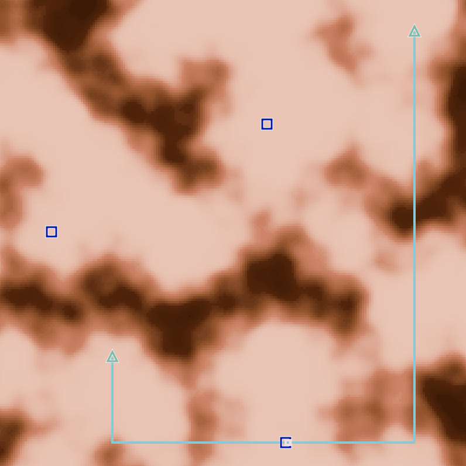

RECRUIT 日本橋ハーフマラソン 2023冬 (AtCoder Heuristic Contest 018)¶

問題概要¶
- 200*200のグリッドで表される土地がある
- 各マスには10〜5000以下の頑丈さの岩盤があるが、これは不明で、1度にC+Pの体力を使ってPだけ岩盤を削ることができる
- 頑丈さはパーリンノイズで生成される
- Cは、入力で与えられる正の整数(1,2,4,8,16,32,64,128)
- Pは、削るときに毎回決める値(5000以下の正の整数)
- 各マスについて、最初の頑丈さ以上に削った場合に岩盤が破壊される
- W(=1〜4)箇所に水源、K(=1〜10)箇所に家があり、水源から岩盤がなくなっているマスを辿って水が流れる
- できるだけ少ない体力で、岩盤を削り、すべての家に水が流れるようにせよ
時間¶
- 199 時間
個人的メモ¶
- 探索と活用のバランスを取りながら、硬いところをできるだけ回避してルートを作る、のが難しい問題
- ざっくり、「格子点や不確実性が高いなどのマスを試掘し、その情報から地図を作成し、水路ルートを更新、を繰り返す」方法が強かった模様
- また今回は、結構似たようなアプローチを取った人が多かったためか、細かい処理・関数の違いやパラメータ調整具合でかなり順位に差がでていた可能性がある
問題固有の性質¶
- 家や水源の位置の頑丈さは、柔らかい場合が多い
- 頑丈さに反比例する確率で選ばれるため
- 近くのマスは同程度の頑丈さであることが多い
- 柔らかいところを軽く調べるのは低コストでできる
- 硬いところを通らないルートを作ることが大事
- 頑丈さが、やわらかい(低い)ところは数十程度なのに対し、硬い(高い)ところは数千程度あるため、100倍ちかく違う
- そのため、硬いところを超える短いルートよりも、柔らかいところのみを通る長いルートのほうがよい、などがある
- 試掘で地図を正確さを高めるのと、どの程度不正確な地図で水路ルートを決めるかバランスが難しい
- コストに見合わない場合も多く、高度な手法ではなく単純な貪欲などでも十分強かった
- コストを抑えるために、不正確・少ない情報で判断する必要があったため、ヒューリスティックを入れまくるほうがよかった？
- 掘るときのパワーは小さいと、回数が増えてしまう一方、正確に推定でき、また、その近くの地点の推定も正確にできる
- Cが128程度でも、正確に推定できるメリットが大きいためか、powerは小さい方がよく、あまりCによる違いが大きくなかった模様
頑丈さの推定¶
- 頑丈さについて、正確な情報が得られないため、2つ推定したいものがある
- 現在の試掘状態から真の頑丈さ
- 掘りきった、掘りきっていない
- 試掘した地点から、まだ試掘していない(周囲)地点の頑丈さ
- 現在の試掘状態から真の頑丈さ
- これらを考慮して、試掘地点の選択、頑丈さを推定、掘削パワーの決定、を行う必要がある
現在の試掘状態から真の頑丈さの推定¶
- 掘りきった/掘りきっていないしかわからないため、正確な頑丈さを得るのが難しい
- 細かく刻めば真の頑丈さに近い値がわかるがコストがかかり、荒く刻むとコストはかからないが真の頑丈さの推定精度は低くなる
- 真の頑丈さについて、区間で表現するすると扱いやすい?
- 最大(上限)、最小(下限)
- 分布(正規分布) -> ガウス過程回帰
- 今回、おおよその値が入力データの統計から分布を見て推定
- 指数的だった模様?
試掘する地点の候補¶
- 近くのマスが同程度の頑丈さであることが多いので、あまりすでに掘った地点の近くを調べる必要がない
- そこで、ある程度離れた地点を調べたかった
- 格子点
- 不確実性が高い地点
- また、通らないような地点を調べても無駄なので、現状でのベストな水路ルートを作ってみてそのルート上の地点を調べることで無駄な試掘が減らせる
- 掘削していないところは無駄に調べない、など細かい非効率が重なると差がつく可能性がある
荒いグリッドやメッシュの格子点¶
- フィールド全体をM*M程度の荒いグリッドにして、その格子点を調べる
- 軸に直角/斜め、三角格子、ハニカム、サイコロの5の目のような感じ、など
- ただし、本当は「円」に近い感じがベースが良い可能性も
- https://twitter.com/tsukammo/status/1630055493225050113
- Mの値は人によって違っていて、10程度〜30程度など
- 細かくすると、水路ルートが計算するたびぶれまくったり、計算コストが増える恐れもある
- 軸に直角/斜め、三角格子、ハニカム、サイコロの5の目のような感じ、など
- 家や水路も含むようにしておく
- 軸として追加せずに、グリッドにはならないが、近くの格子点と辺をつないでグラフにする、なども
- 1位Psyhoさんの場合: https://twitter.com/bowwowforeach/status/1630191132541079552
不確実性が高い地点¶
- 格子点ではなく、任意地点で調べる価値があるが不確実性が高いところを調べる
- ルートの中間地点(二分探索的に調べる)
- なんらかの方法で、不確実性が高い順に調べる
- すでに調べた地点から遠い
- 推定(モンテカルロ法、ガウス過程等)で不確実性が高い値の地点
次に破壊された場合に嬉しい地点¶
- 次に破壊できたと仮定して、連結になるのにかかる期待コストが低いものを選ぶ
推定方法¶
逆距離加重和、距離を考慮した重み付き平均¶
- Inverse Distance Weighting
- 距離の逆数を重みとした加重平均
- パーリンノイズはユークリッド距離的な感じなので、距離を使うときはユークリッド距離で計算したほうがよいかも
線形補間¶
- https://ja.wikipedia.org/wiki/%E7%B7%9A%E5%BD%A2%E8%A3%9C%E9%96%93
- 2地点に対してその間を補間するのに、一次式(線形)で補間
- 多項式補間
- 計算が軽い
近傍マスで重み付け¶
- https://zenn.dev/gmeriaog/articles/880af6fb3728b5
- https://qiita.com/toast-uz/items/a71bcfbe721aba18c8fb
- 入力データから統計を取って、破壊できなかったときの実際の頑丈さ、dだけ離れた位置で何倍になるかなど確認し、調整
- 画像っぽく考える
- カーネルによる重み和/平均
- フィルタとかのカーネル(m*m)っぽく見て重み和/平均を考える
- CNN(U-Net)を使う
ガウス過程回帰¶
- 不確かさを扱う方法として「ガウス過程」が使える
- ただし、素直に計算すると候補点数が増えると厳しいので、近くの頂点だけにしたり、近似・高速化などが必要
- カーネルのチューニングも必要そう?
- https://twitter.com/yos1up/status/1629827983187013632
- https://twitter.com/YamagenSakam/status/1629784103305510913
- https://twitter.com/contramundum2/status/1629784992862576642
- https://twitter.com/terry_u16/status/1629784652104994816
- https://twitter.com/koyumeishi_/status/1629791873782145024
- https://twitter.com/SakiKuroe/status/1629795830898233350
MLS(Moving Least Squares?)¶
試掘時のパワー¶
- 基本は、推定値程度(か、少し弱めのパワー)で試す
- また、岩盤が壊れない場合に、壊れるまで試してしまうと、硬い岩盤の場合にかなりコストを使ってしまうので掘り切るのは避けたほうが良い
- 壊れない場合は、小さいパワーで追加で削ったり、しきい値以下までしか削らない等で、コストを抑えておく必要がある
- 回数を抑えるために、
power_i = init_power * alpha^i的な感じで徐々に増やす感じ、など - 今回、追加で調べるときのパワーは小さい方がよかった模様
- 小さいと回数が増えてしまいCによるコストが増えるが、正確に推定でき、周囲の推定精度やルートを削るときのコストが減らせる副次的メリットが大きい
- 回数を抑えるために、
水路ルート生成¶
最小シュタイナー木¶
- 平面上の点を結ぶ(点を追加してもよい)直線で総距離が最小のものは最小シュタイナー木で求められる
- https://kopricky.github.io/code/Academic/steiner_tree.html
- ターミナル数が少なければ、bit mask DPで一応求められる
- https://atcoder.jp/contests/ahc018/editorial/5899
- が、200*200程度の地点もあるため、かなり計算コストもかかってしまう
- また、不正確な推定情報しか使えないのもあるため、最適解である必要があまりなく、厳密に最小を狙わず、近似的に低コストなルートが作れれば十分だった
- 候補点が多いと、ルートが更新毎にぶれまくってしまう
- 高速に計算できると、総実行時間も減らせて、パラメータチューニングなどを多く試行できるメリットがある
格子点上のみで計算するか、全マスで計算するか¶
- 全マスで計算すると計算コストがそこそこかかってしまうため、試掘のときの格子点でつないだグラフ上で計算するでも十分
- ただ、格子点間が離れていると、その間に硬い部分が微妙に入った場合に、想定よりコストが掛かってしまう可能性がある
- また、格子点間のつなぎ方は、4方向だけでなく、斜め方向も使える可能性はあるので、考慮すると良いかも
ダイクストラを繰り返す、で近似¶
- 水源に近い家から貪欲に、ダイクストラ等で一番近くの水があるマスにつなぐことを繰り返す
- ダイクストラを使っている人が多かったけど、平面的なのでSPFAでもよかった？
MST上で最小距離でつなぐ、で近似¶
- 格子点でのグラフでMSTを作って、そのMSTの辺のみを使って各家から水源への最小距離でつなぐ
- (自分はMSTの不要な葉頂点を繰り返し消してルートを作ったけど、普通に最小距離で繋げば余計な処理を削れた、、、)
水路ルート上の掘削¶
- 基本は推定値程度で掘って、壊れなければ壊れるまで掘る
- 試掘時の推定値や、格子点の場合は両端の値から推定
- 平均、期待値DP、など
- 基本、1マスずつ壊すのだと、一つ前の情報も使える
- 1マス飛ばしで調べて、前後の値を使うなども工夫可能
- どの程度効くかは不明
パラメータチューニング¶
- 今回、高度な手法やアイデアというより、十分汎用な手法でパラメータチューニングをきちんとするのが重要だった可能性がある
- 「Cごとに1000〜10000ケースでチューニング」みたいな上位に多かったかも
- 高速に大量のケースを試すために、高速な解法にする、並列実行(クラウド実行)、探索方法の工夫など
チューニングツール¶
- psytester
- optuna
- ただし、"自動"チューニングツールの使い方は気をつけたほうがよいという批判もある
- https://twitter.com/FakePsyho/status/1631275687058219010
- 基本的に自動チューニングが必要なコンテストはあまりない
- 自動でチューニングすると洞察が得られない
- 単峰性が多く、3分探索やグリッドサーチなどで十分
- 早いタイミングでの最適化により、他の手法での改善判断が難しくなる
- 必要なら最後に行う
- https://twitter.com/not_522/status/1631963338250018818
- フレームワークとして、可視化やDBでの管理などもあるのでそちらを有効活用
- ただし、"自動"チューニングツールの使い方は気をつけたほうがよいという批判もある
焼きなましっぽく探す¶
- 6位のarvindf232さんは、焼き鈍し法っぽい感じで、テストケースを時間とともに増やしながらパラメータ(十数個)を最適化した模様
その他¶
SPH(Smoothed Particle Hydrodynamics)¶
ボーリング調査¶
- 地盤調査方法
- ある地点に穴を開けてそこからサンプルを得て調査する
- https://twitter.com/terry_u16/status/1629794734503002113
マンハッタン距離のとき単純な経路が選ばれやすい問題¶
- タイのときは、始点からのユークリッド距離を使う
- https://twitter.com/_phocom/status/1630205013187338240
サンプルがそこそこ強かった¶
- 全制約を使っていてかつシンプルな解法、ゆえに結構強かった(解説放送)
- Powerも100が適当に決めたわりによい値で、上げたり下げたりすると、結果は悪化してしまった模様
- ここから工夫を入れようとしても、コストがかかってしまって逆に悪化しやすいなどあり、結構サンプルよりも良い結果を得るまでが難しい
手元での評価方法¶
- 相対評価なので、手元でどうなるか確かめるのが難しい
- 「best/score」な感じ
- 「絶対スコアの和」だと、スケールがかなり違う値が混ざるので参考にならない
- 自分のベストと比較する
- topがかなり良いスコアだと、これで上がっても実際はそんなに改善しない、など(AHC016とか)
- 頑丈さが既知だった場合の結果(チートした場合、下限)と比較する
- 実は今回はあまりこれはケースごとのブレが大きかったので、よくなかったかも
- logを取ったものの合計
- https://twitter.com/_phocom/status/1629789717884702720
- https://twitter.com/sash277/status/1629790417742077952
問題の元ネタ¶
- 卵が割れる回数を見つけるやつ
- 「卵２個で落としたら割れる階数を調べる問題」？
- https://mathlog.info/articles/2098
入力データの傾向の調査¶
- ヒストグラムを作って観察、統計量を見る
- 頑丈さが低い地点が多い、というのが気づきやすかった
- https://qiita.com/toast-uz/items/a71bcfbe721aba18c8fb
- 入力生成の中で、ロジスティック関数など使っているのは、ある程度低い地点が多く、一方、高いところもある、というところを調整した結果らしい
- https://kusano-k.hatenablog.com/entry/2023/03/02/025046
visualizer周り¶
- visualizerで推定値もvisualizeするテク
- お絵かき
- visualizerTシャツ
インタラクティブ問題のデバッグ方法¶
shake up/shake down¶
- 今回は、暫定ケースがまあまあ偏っていた可能性がある
- C=1のケースが少なかった？
- そのせいか、暫定順位とシステムテストの結果で順位変動がいつもより大きかったように思われる
解説¶
(100位まで&発言を見つけられた方のみ)
- 1位Psyhoさん
- 2位yokozuna57さん
- 3位wanuiさん
- 4位KawattaTaidoさん
- 5位phocomさん
- https://twitter.com/_phocom/status/1629787917706223618
- https://twitter.com/_phocom/status/1629789717884702720
- https://twitter.com/_phocom/status/1629790591847473152
- https://twitter.com/_phocom/status/1629791626703896576
- https://twitter.com/_phocom/status/1629794815117348865
- https://twitter.com/_phocom/status/1629797064811986944
- https://twitter.com/_phocom/status/1629798838142914560
- https://twitter.com/_phocom/status/1629802240293699586
- https://twitter.com/_phocom/status/1629867204249374720
- https://twitter.com/_phocom/status/1629991305785884673
- https://twitter.com/_phocom/status/1630057876726386688
- https://twitter.com/_phocom/status/1630100199635836928
- https://twitter.com/_phocom/status/1630205013187338240
- 6位arvindf232さん
- 7位yosssさん
- 8位iwashi31さん
- https://twitter.com/iwashi31/status/1629786748678184961
- https://twitter.com/iwashi31/status/1629789874772643841
- https://twitter.com/iwashi31/status/1629791064575062017
- https://twitter.com/iwashi31/status/1629789022326489088
- https://twitter.com/iwashi31/status/1629845491684102144
- https://twitter.com/iwashi31/status/1629848849367052289
- https://twitter.com/iwashi31/status/1630205743814291457
- 9位saharanさん
- https://twitter.com/shr_pc/status/1629792424230014977
- https://twitter.com/shr_pc/status/1629793315989372928
- https://twitter.com/shr_pc/status/1629794953529552899
- https://twitter.com/shr_pc/status/1629797877320138753
- https://twitter.com/shr_pc/status/1629798718181629952
- https://twitter.com/shr_pc/status/1629800268920688641
- https://twitter.com/shr_pc/status/1629802654611439617
- https://twitter.com/shr_pc/status/1629807099436990464
- 10位gazelleさん
- 11位gasinさん
- 12位madouさん
- 13位Kiri8128さん
- 14位sashさん
- 15位hitonanodeさん
- 16位ToastUzさん
- https://qiita.com/toast-uz/items/a71bcfbe721aba18c8fb
- https://twitter.com/ToastUz/status/1629785122332639233
- https://twitter.com/ToastUz/status/1629789051619540992
- https://twitter.com/ToastUz/status/1629794399243890689
- https://twitter.com/ToastUz/status/1629836598815899649
- https://twitter.com/ToastUz/status/1629847593873457152
- https://twitter.com/ToastUz/status/1629969947236659200
- 17位eijirouさん
- 18位tanzakuさん
- 19位bowwowforeachさん
- 20位shamioさん
- 21位yowaさん
- 22位Risenさん
- 23位montplusaさん
- 24位Shun_PIさん
- 25位dn6049949さん
- 26位notkamonohasiさん
- 27位tek1031さん
- https://twitter.com/tek1031/status/1629786843125534721
- https://twitter.com/tek1031/status/1629787599543111682
- https://twitter.com/tek1031/status/1629790160375410700
- https://twitter.com/tek1031/status/1629791561201651713
- https://twitter.com/tek1031/status/1629792986195427328
- https://twitter.com/tek1031/status/1629794364808638464
- https://twitter.com/tek1031/status/1629794444835979272
- 28位kaz_mightyさん
- 29位simanさん
- 30位brown_amaurotisさん
- 31位zachさん
- 32位maeda3さん
- https://twitter.com/dj_maeda3/status/1629789982880849920
- https://twitter.com/dj_maeda3/status/1629795757267234822
- https://twitter.com/dj_maeda3/status/1629799351496359936
- https://twitter.com/dj_maeda3/status/1629799987801657345
- https://twitter.com/dj_maeda3/status/1629810950466576384
- https://twitter.com/dj_maeda3/status/1629816902683090945
- https://twitter.com/dj_maeda3/status/1630201199323668482
- 33位cuthbertさん
- 34位c7c7さん
- 35位Kahukaさん
- 36位terry_u16さん
- https://twitter.com/terry_u16/status/1629786825223962625
- https://twitter.com/terry_u16/status/1629787691024805888
- https://twitter.com/terry_u16/status/1629788114284695553
- https://twitter.com/terry_u16/status/1629789782028218373
- https://twitter.com/terry_u16/status/1629790126359429122
- https://twitter.com/terry_u16/status/1629790351262380033
- https://twitter.com/terry_u16/status/1629791535553294337
- https://twitter.com/terry_u16/status/1629793599180230656
- https://twitter.com/terry_u16/status/1629794734503002113
- https://twitter.com/terry_u16/status/1629796315923386369
- https://twitter.com/terry_u16/status/1629798864957095936
- https://twitter.com/terry_u16/status/1629800605136080897
- https://twitter.com/terry_u16/status/1629800716935266305
- https://twitter.com/terry_u16/status/1629801627925491712
- https://twitter.com/terry_u16/status/1629803167511633921
- https://twitter.com/terry_u16/status/1629806397327310853
- https://twitter.com/terry_u16/status/1629808402242191362
- https://twitter.com/terry_u16/status/1629809420497747969
- https://twitter.com/terry_u16/status/1629844698436182016
- https://twitter.com/terry_u16/status/1629845843728801792
- https://twitter.com/terry_u16/status/1629847240792588293
- https://twitter.com/terry_u16/status/1629848095163916291
- https://twitter.com/terry_u16/status/1629848944749735937
- https://twitter.com/terry_u16/status/1629850596571504641
- https://twitter.com/terry_u16/status/1629867724112527362
- https://twitter.com/terry_u16/status/1629869838519681026
- https://twitter.com/terry_u16/status/1629868421239255042
- https://twitter.com/terry_u16/status/1629883150951239680
- https://twitter.com/terry_u16/status/1629886141817323520
- https://twitter.com/terry_u16/status/1629887020142301185
- https://twitter.com/terry_u16/status/1630085006034079748
- https://twitter.com/terry_u16/status/1630228029321494529
- https://www.terry-u16.net/entry/ahc018
- 37位starpentagonさん
- https://twitter.com/stat_learning/status/1629797977832439808
- https://twitter.com/stat_learning/status/1629812201694576640
- https://twitter.com/stat_learning/status/1629813091612639236
- https://twitter.com/stat_learning/status/1629824510412361729
- https://twitter.com/stat_learning/status/1629826755702951937
- https://twitter.com/stat_learning/status/1629840281049907200
- https://starpentagon.net/analytics/ahc018/
- 38位m_mさん
- 39位HBitさん
- 40位fky_さん
- 41位besukohuさん
- 42位risujirohさん
- 43位Jirotechさん
- 44位ks2mさん
- 45位hiro116sさん
- 46位rhooさん
- 47位Yu_212さん
- 48位sotanishyさん
- 49位hirataiさん
- 50位yasuwoさん
- 51位saitodevel01さん
- 52位btk15049さん
- 53位sumitacchanさん
- 54位iehnさん
- 55位hexa0611さん
- 56位highjumpさん
- 57位nautさん
- 58位kozimaさん
- https://twitter.com/t33f/status/1629785259746160642
- https://twitter.com/t33f/status/1629799441535254529
- https://twitter.com/t33f/status/1629801175758274565
- https://twitter.com/t33f/status/1629826200700059649
- https://twitter.com/t33f/status/1629843787613884418
- https://twitter.com/t33f/status/1629845038179192834
- https://twitter.com/t33f/status/1629859319859806208
- https://twitter.com/t33f/status/1630197218597543937
- 59位shibh308さん
- 60位broadさん
- 61位YamagenSakamさん
- 62位birdwatcherさん
- 63位eivourさん
- https://twitter.com/contramundum2/status/1629784992862576642
- https://twitter.com/contramundum2/status/1629787107622531072
- https://twitter.com/contramundum2/status/1629789178685952001
- https://twitter.com/contramundum2/status/1629798946783776768
- https://twitter.com/contramundum2/status/1629834620886994944
- 64位yuuki_nさん
- 65位kensさん
- 66位nutsさん
- 67位zattさん
- https://twitter.com/zat_is_a_cat/status/1629789959807971335
- https://twitter.com/zat_is_a_cat/status/1629792145346539521
- https://twitter.com/zat_is_a_cat/status/1629792589481402368
- https://twitter.com/zat_is_a_cat/status/1629795647036727296
- https://twitter.com/zat_is_a_cat/status/1629796344188780544
- https://twitter.com/zat_is_a_cat/status/1629799631701024771
- https://twitter.com/zat_is_a_cat/status/1629802409739563010
- https://twitter.com/zat_is_a_cat/status/1630057325292834817
- 68位krさん
- 69位kabipoyoさん
- 70位ikomaさん
- 71位sash0さん
- 72位Ueddyさん
- 73位G4NP0Nさん
- https://twitter.com/G4NP0N_kyopro/status/1629786113710919680
- https://twitter.com/G4NP0N_kyopro/status/1629789692240740352
- https://twitter.com/G4NP0N_kyopro/status/1629793934586302464
- https://twitter.com/G4NP0N_kyopro/status/1629800641534263298
- https://twitter.com/G4NP0N_kyopro/status/1629801791843110912
- https://twitter.com/G4NP0N_kyopro/status/1629802496888815617
- https://twitter.com/G4NP0N_kyopro/status/1629804174652379136
- https://twitter.com/G4NP0N_kyopro/status/1629865221174210560
- 74位sugarrrさん
- 75位AllDirectionsさん
- 76位rabotさん
- 77位petit_sophiaさん
- 78位dn154さん
- 79位sumoooruさん
- 80位Moegiさん
- 81位nnnSMMさん
- 82位amitaniさん
- 83位arimattiさん
- 84位bin101さん
- 85位tokoharuさん
- 86位hamamuさん
- 87位ichyoさん
- 88位tsukammoさん
- 89位RinSakamichiさん
- 90位y_kawanoさん
- 91位sensaurさん
- 92位theory_and_meさん
- 93位ehekatlactさん
- 94位nnnnishiさん
- 95位mtsdさん
- 96位chudanuさん
- 97位Sullyperさん
- 98位tosca2020さん
- 99位hirokazu1020さん
- 100位fgwiebfaoishさん